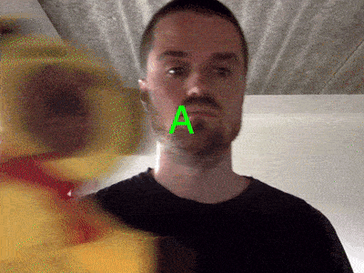
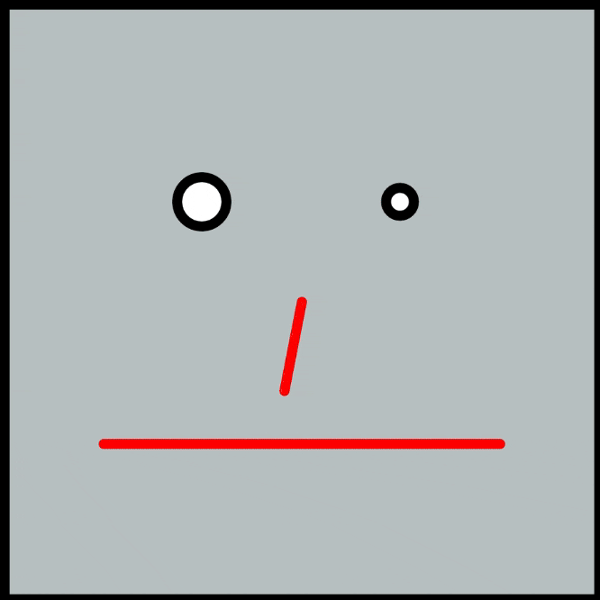
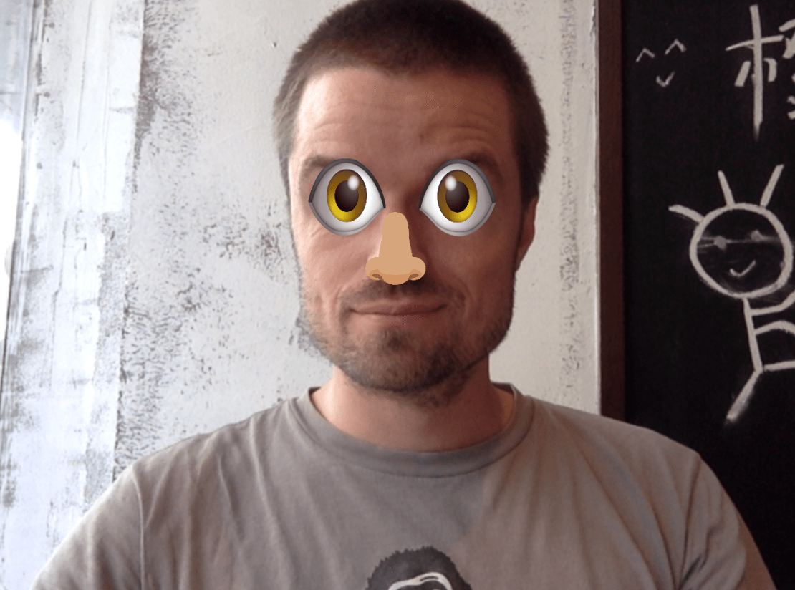

Machine Learning Workshop @UWC
1) Train your own classification algorithm
- 
- Exercise (5 minuttes): Train a classifier to distinguish between two different classes. Make the sketch output a descriptive text for each class.
- Exercise (10 minuttes): Train a classifier to distinguish between two different classes. Make the sketch output an image or a sound of your choice.
2) Train your own regression algorithm
- 
- Exercise (30 minuttes): Pick one aspect of the face to control using regression. It could be the size, position or color of the eyes, head, mouth that gets controlled by slider.value(). Remember to multiply slider.value() with a higher number, since it only goes between 0.0 and 1.0.
Too easy? Then find your own face sketch from yesterday and see if you can use regression to control part of that instead!
3) Track your body

- 

- Exercise (15 minuttes): Pick A or B:
A) Try to place a mask, a fun nose or some crazy eyes on top of your face. Use the example called "Access different parts of the body" as your starting point.
B) Pick two different body poses and train the system to recognize them. Use the example called "Classify different body poses" as your starting point.
Having issues running the examples?
- Make sure you are running them in Google Chrome
- Webcam access on Mac: Allow camera on MacOSX in System Preferences
- Webcam access on Windows 10: Select Start > Settings > Privacy > Camera. Set "Let apps use my camera" to "On". Make sure Chrome has access to use the camera.
- Older computers with less powerfull graphics cards might run out of memory if you record hundreds or thousands of examples from the webcam, especially on Windows. If it happens, switch to another computer or be more modest when recording training data.